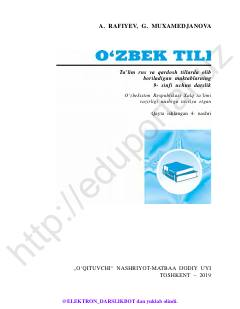

9ORusiyzabon maktablarning 9-sinfi uchun o'zbek tili darsligi.
Mazkur darslik rus va qardosh tillarda ta'lim olib boriladigan maktablarning 9-sinfi uchun mo'ljallangan bo'lib, o'zbek tilidan og'zaki va yozma nutq ko'nikmalarini oshirishga xizmat qiladi. Kitobda turli nutqiy mavzular, leksik va grammatik qoidalar, shuningdek, matn ustida ishlash uchun topshiriqlar berilgan.